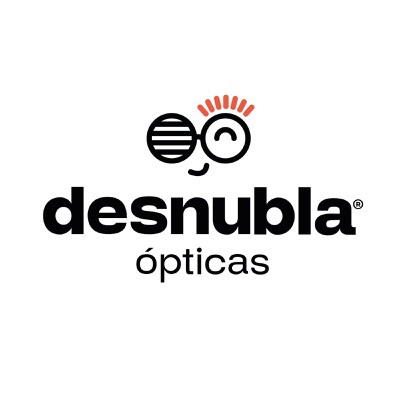

01 / 04
01 / 04
Hiperautomatización y Rediseño de Procesos
Arquitecturas digitales que erradican las tareas manuales, de punta a punta.
Modelos operativos globales y escalables impulsados por hiperautomatización, analítica avanzada e Inteligencia Artificial — con el rigor de Lean Six Sigma detrás de cada iniciativa.
Entendemos la Transformación Digital no como la simple adopción de software, sino como el rediseño estratégico de la operación y la integración de Inteligencia Artificial para crear organizaciones ágiles, eficientes y preparadas para el mercado global.
Somos una firma especializada en la arquitectura, optimización y automatización inteligente de modelos operativos globales, con una Oficina de Gestión de Proyectos (PMO) que lidera iniciativas de cualquier naturaleza.
Nuestra metodología conecta la tecnología con los objetivos de negocio a través de cuatro pilares fundamentales.
01 / 04
Arquitecturas digitales que erradican las tareas manuales, de punta a punta.
 02 / 04
02 / 04
Tableros dinámicos con control total e indicadores clave en tiempo real.
 03 / 04
03 / 04
Equipos que adoptan la IA como co-piloto, sin perder continuidad.
 04 / 04
04 / 04
Modelos modernos para crecer de manera sostenible y sin fricciones.
Fusionamos Lean 6 Sigma con las tecnologías más avanzadas en Inteligencia Artificial y automatización. El resultado: una infraestructura empresarial sólida, sin fricciones y lista para escalar en mercados internacionales.
Entendemos tu operación, objetivos y puntos de fricción.
Levantamos datos e indicadores del estado actual.
Identificamos causas raíz y oportunidades de automatización.
Rediseñamos procesos e implementamos tecnología e IA.
Gobernanza, tableros y adopción para sostener los resultados.

Transformación integral de procesos backoffice y migración a OptiSync, ERP modular propio que automatiza de punta a punta pagos, facturación, punto de venta y gastos.
Transforma la complejidad en autonomía. Una auditoría de procesos es el primer paso para llevar a tu empresa al siguiente nivel de competitividad global.